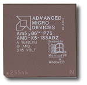
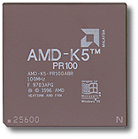

 |
AMD-X5 | -133 | P | V | T |
| AMD-X5-133ADZ PGA, 3.45V, 85 C |
Family / Core AMD-X5 |
Clock Speed 133MHz |
Package type A = 168 pin PGA S = 208 pin SQFP |
Operating voltage D = 3.45V F = 3.3V |
Case temperature W = 55 C Z = 85 C |
Advanced Micro Devices je drugi po redu proizvoðaè procesora u svetu.
Procesor èetvrte generacije AMD Am5x86 - P75 ima bolje perfomanse od procesora Pentium na 75 MHz. Procesor radi interno na 133MHz množeæi 4 puta eksterni clock od 33MHz. Ima 16kb internog cache-a.
Uradjen je u 0.35 mikronskoj tehnologiji.
 |
AMD-K5 | PR100 | A | B | R |
| AMD-K5-PR133ABQ PGA, 3.3V |
Family / Core AMD-K5 |
Clock Speed 100MHz |
Package type A = 168 pin PGA S = 208 pin SQFP |
Operating voltage B,C,F = 3.3V K=2.5V J=2.7V H = 2.9V |
Case temperature |
Interno radi na 100MHz mozeci eksterni clock od 66MHz sa 1.5. Postoje 4 tipa procesora sa istom oznakom i svi rade na drugacijem naponu.